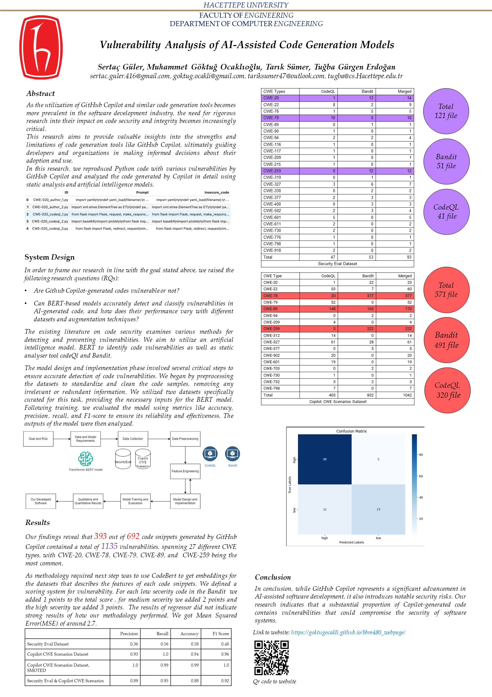

About
In the swiftly evolving realm of software development, the advent of code generation tools has revolutionized the methodologies embraced by programmers. GitHub Copilot, among these innovative tools, harnesses the power of machine learning to aid developers in crafting code snippets, functions, and entire programs with unparalleled efficiency. However, with this empowerment comes the weighty responsibility of ensuring the integrity and security of the generated code. Our research delves deep into the impact of GitHub Copilot and similar tools on code security and integrity, addressing critical concerns surrounding automated code generation. By conducting rigorous analyses and investigations, we aim to shed light on the strengths, limitations, and security implications associated with the utilization of these tools. Through our findings, we aspire to equip developers and organizations with the knowledge needed to navigate the landscape of AI-powered code generation tools judiciously and securely.
Download the research paper:
Download PDFProje Posteri
Project Video
Proje Ekibi
Muhammet Göktuğ Ocaklıoğlu
goktug.ocakli@gmail.com
Sertaç Güler
sertac.guler.416@gmail.com
Tarık Sümer
tariksumer47@outlook.com
Advisor

Tuğba Gürgen Erdoğan
tugba@cs.hacettepe.edu.tr